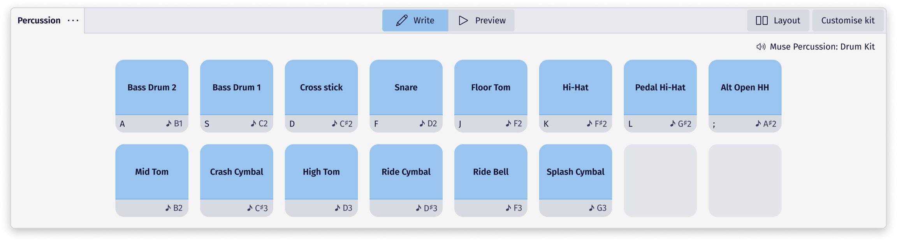

Inputting percussion notation
This section describes note entry for unpitched percussion instruments. For pitched percussion instruments, see Entering notes and rests.
Overview
In MuseScore Studio, each unpitched percussion instrument, including combination instruments like drum kits and mixed percussion, comes preconfigured for seamless notation and playback.
This means that when you add an instrument – whether it be a single cow bell, or a complete drum kit – the notation for each sub-instrument in the kit (bass drum, snare drum, cymbals, etc.), as well as any techniques and variants (hits, rim shots, rim knocks, etc.) is configured automatically. MuseScore Studio takes care of the number of stave lines for the kit, as well as the shape and placement of all noteheads on the stave. What's more, the correct sound is automatically assigned in playback for MS Basic and MuseSounds libraries.
If you have unique notation requirements, there are of course options to customize the mapping for each instrument (See Percussion kit customization).
Adding a percussion instrument to your score
You can add a percussion instrument just like any other instrument (see Setting up your score and the Layout panel).
Each unpitched percussion instrument comes with a pre-configured set of sub-instruments, as well as variants and techniques that are determined by the sound library chosen in the mixer.
In addition to individual orchestral percussion instruments and marching drumlines, MuseScore Studio comes with several combo kits that combine many common sub-instruments onto one stave. These include:
- Drum kits (common, minimal, large)
- Mixed percussion
- General MIDI percussion
It is possible to customize the stave of any existing unpitched instrument with a unique combination of sub-instruments, although playback support may not always be available. To learn more, see Percussion kit customization.
Inputting notes and rests on percussion staves
There are several ways to enter notation on a percussion stave. We'll cover each one in turn. These are:
- Using the percussion input panel
- Input by mouse directly on the stave
- Keyboard shortcuts
- Input via MIDI keyboard
- Input using the virtual piano
Using the percussion input panel
To open the percussion input panel:
- Select the stave of an unpitched percussion instrument, or
- Select a note or rest on an unpitched percussion stave
The percussion panel appears at the bottom of the app window. It shows all sub-instruments and variants available on the selected stave, as determined by the sound library assigned in the mixer for that instrument:

The percussion panel in MuseScore Studio uses a drum pad style layout that makes it easy to see what sub-instruments and variants are available for your instrument.
To input notation using the percussion input panel, click on any of the drum pads. Notation will be entered at the note input cursor position, regardless of the voice to which the selected sub-instrument or variant is assigned.
Write mode will be enabled by default. This means that any click on a drum pad will input notation directly on the stave.
To hear the sound of instruments assigned to a drum pad without inputting notation:
- Click the Preview button in the percussion panel header
- Click on a drum pad to hear its sound
- Click the Write button again to resume notation
See Customizing the percussion panel for more.
Input by mouse directly on the stave
To input percussion notation directly on the stave with your mouse:
- Select the stave where you want to input notation
- Enter note input mode
- Hover your mouse pointer over the stave to see a preview note for the instrument or variant assigned to that stave position
- (Optional) Hold Shift while hovering to see a popup that labels the instrument at each stave position. Where left/right arrows appear in the popup, click on them to scroll through the available variants at the same stave space or line.
- Left-click the notehead to input the note
The preview note shows whatever instrument or variant is available at the stave position where your mouse pointer is hovering. When you move your mouse, the preview note will change to show whatever is available at each new position.
Keyboard shortcuts
You can assign a keyboard shortcut to each pad in the percussion panel.
By default, the first row of pads will take the keys A, B, C, D, E, F, G, H. Any key can be assigned to a pad, although you'll be prompted if your chosen key conflicts with another shortcut command.
To assign a keyboard shortcut to a drum pad:
- Click the bottom grey options section of a drum pad (or navigate to it using the Tab key)
- Select Define keyboard shortcut
Using a MIDI controller
To add notes to an unpitched percussion stave using a MIDI keyboard:
- Select a note, rest, or measure
- Select a note duration
- Press a key on your MIDI keyboard to input a note
- (Optional) Press 0 to enter a rest of the selected duration
Notation will be entered on the stave in whatever note input mode has been set as the default in Preferences. For more information on using different note input modes, see Entering notes and rests.
Each drum pad on the percussion panel displays the MIDI key assigned to each available sub-instrument or variant. Note that these will change depending on the sound library assigned to that instrument in the mixer.
Using the on-screen piano keyboard
To add notes to an unpitched percussion stave using MuseScore Studio's on-screen piano keyboard:
- Open the piano keyboard by going to View > Piano keyboard (or use the shortcut P)
- Select a measure, note, or rest
- Select a note duration
- Click a key on the on-screen piano keyboard with your mouse
- (Optional) To add another note to an existing one, press and hold Shift clicking a different key
- (Optional) Press 0 to enter a rest of the selected duration
Applying additional techniques and variants
Many sound libraries come with additional techniques and variants that can extend the performance of your instruments. For example, snares can be set to on or off, or different implements can be used, including sticks, brushes, and hot rods.
These are added using sound flags. Note that this feature is currently only available for selected MuseSounds libraries. Options will vary depending on the chosen sound library.
Learn more about sound flags.